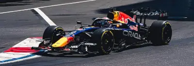
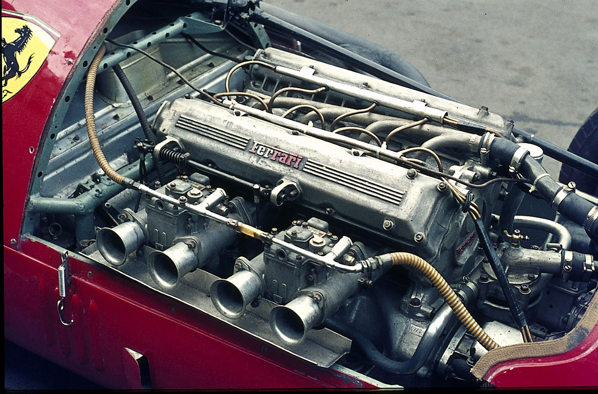

As corridas de Fórmula 1 representam o mais alto nível do automobilismo mundial, reunindo os melhores pilotos, equipes e tecnologias do esporte a motor. Em cada Grande Prêmio, os competidores disputam voltas em circuitos espalhados por diversos países, buscando a melhor estratégia, velocidade e precisão para conquistar a vitória. Além da habilidade dos pilotos, o desempenho dos carros, o trabalho das equipes nos boxes e as decisões estratégicas durante a prova são fatores essenciais para o resultado. A Fórmula 1 é um esporte que combina inovação, emoção e competição, atraindo milhões de fãs ao redor do mundo e proporcionando corridas marcadas por ultrapassagens, disputas intensas e momentos históricos.
O agrupamento de carros na Fórmula 1 é um dos fatores que tornam as corridas mais emocionantes e imprevisíveis. Quando vários pilotos permanecem próximos uns dos outros, aumentam as oportunidades de ultrapassagem, disputas por posição e estratégias diferentes ao longo da prova. Além disso, os carros sofrem influência do ar turbulento gerado pelos adversários à frente, o que pode dificultar a aproximação em alguns trechos e favorecer ataques em outros. Esse equilíbrio entre desempenho, estratégia e habilidade dos pilotos faz com que cada corrida tenha características únicas, proporcionando um espetáculo competitivo e repleto de emoção para os fãs do automobilismo.

desenvolvidos para oferecer o máximo desempenho com alta eficiência. Atualmente, os carros utilizam unidades de potência híbridas, que combinam um motor V6 turbo de 1,6 litro com sistemas elétricos de recuperação de energia. Essa tecnologia permite aproveitar parte da energia gerada durante as frenagens e pelos gases do escapamento, aumentando a potência e reduzindo o consumo de combustível. O desenvolvimento desses motores exige grande investimento em engenharia e inovação, tornando a Fórmula 1 uma referência em tecnologia automotiva e contribuindo para a evolução de soluções que, futuramente, podem ser aplicadas em veículos de uso comum.

| Equipe | Patrimônio Estimado | Títulos de Construtores |
|---|---|---|
| Ferrari | US$ 3,9 bilhões | 16 |
| Mercedes | US$ 3,8 bilhões | 8 |
| Red Bull Racing | US$ 2,6 bilhões | 6 |
| McLaren | US$ 2,5 bilhões | 9 |
| Williams | US$ 1,2 bilhão | 9 |